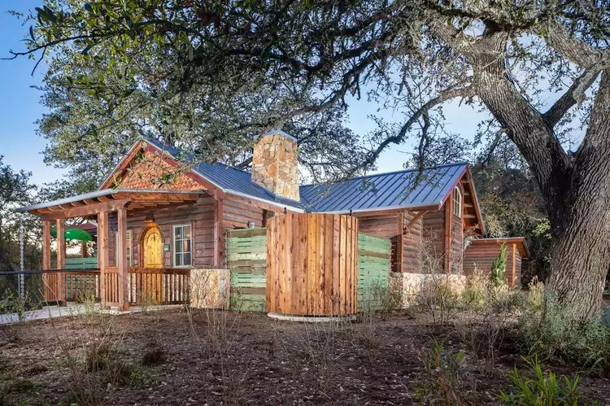
Travel + Leisure · January 2025
"This Hidden Gem Hotel in Texas Hill Country Has Treetop Suites, an On-site Winery, and Farm-to-table Dining"
Travel + Leisure reviews Camp Lucy in Dripping Springs, calling it "the perfect secluded sanctuary in the heart of the Texas Hill Country" — spotlighting the resort's guest cabins and grounds, designed by Deborah Kirk Interiors.
Review Read the article ↗
Austin Home Magazine
"Hill Country Harmony"
A feature on Deborah's approach to blending antique architectural pieces with new construction — and how the result feels like a home that's always been there. "I can almost hear Elizabeth Taylor telling James Dean to take this ottoman up to 'the big house' for Rock Hudson in the movie Giant."
Feature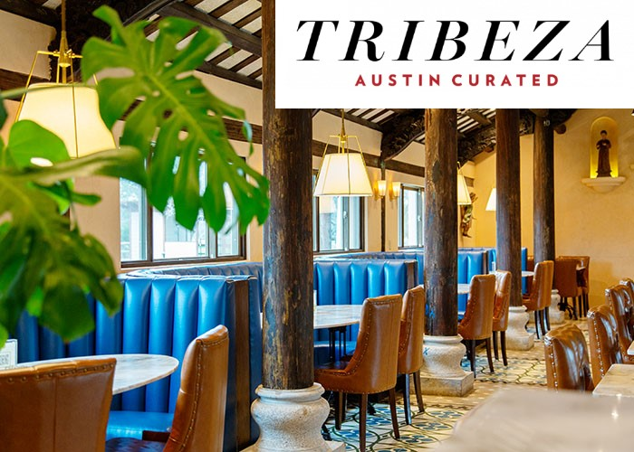
Tribeza
Restaurant Review: Tillie's at Camp Lucy
Tribeza reviews Tillie's, the restaurant at Camp Lucy in Dripping Springs, spotlighting the interiors Deborah Kirk Interiors designed for the space.
Review Read the article ↗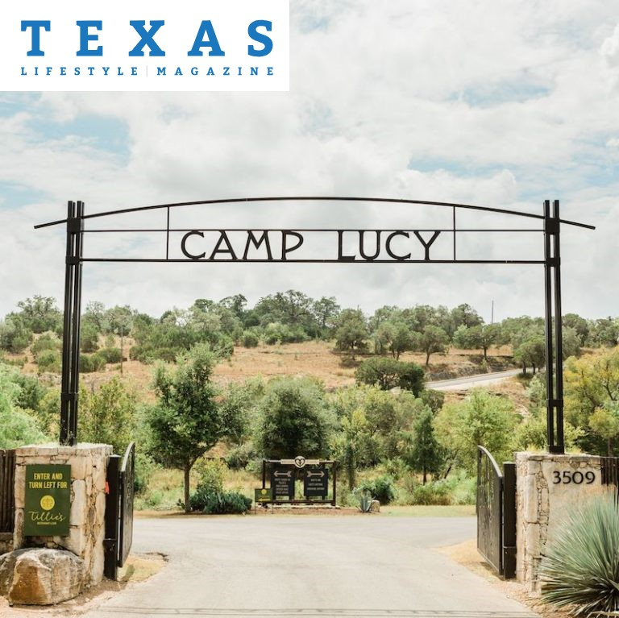
Texas Lifestyle Magazine · June 2020
"The Great Escape — Camp Lucy, Dripping Springs"
As Texans emerged from quarantine in the summer of 2020, Texas Lifestyle Magazine pointed readers to Camp Lucy in Dripping Springs for a change of scenery — spotlighting Deborah Kirk Interiors' work on the property as the Hill Country reopened.
Feature Read the article ↗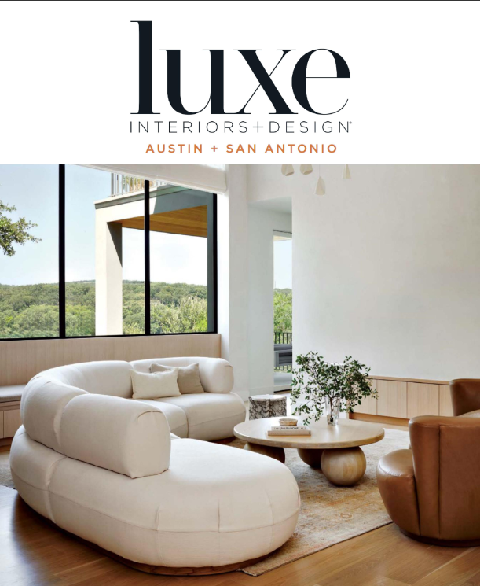
Luxe Magazine · September 2024
"Austin, the Heart of Texas Design"
Deborah Kirk Interiors' work is featured in Luxe Magazine's Austin issue (page 185), highlighting the firm's design work within a showcase of Austin's upscale design scene.
Feature Read the article ↗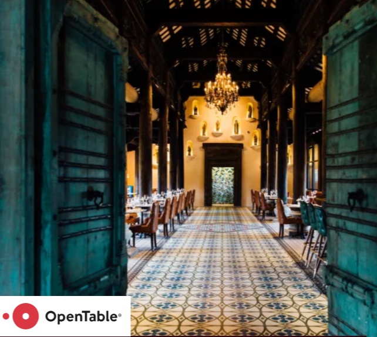
OpenTable · April 2024
"The 12 Most Beautiful Austin Restaurants to Visit Right Now"
OpenTable named one of Deborah Kirk Interiors' restaurant designs among Austin's most beautiful dining rooms, spotlighting the firm's hospitality design work in the city.
Feature Read the article ↗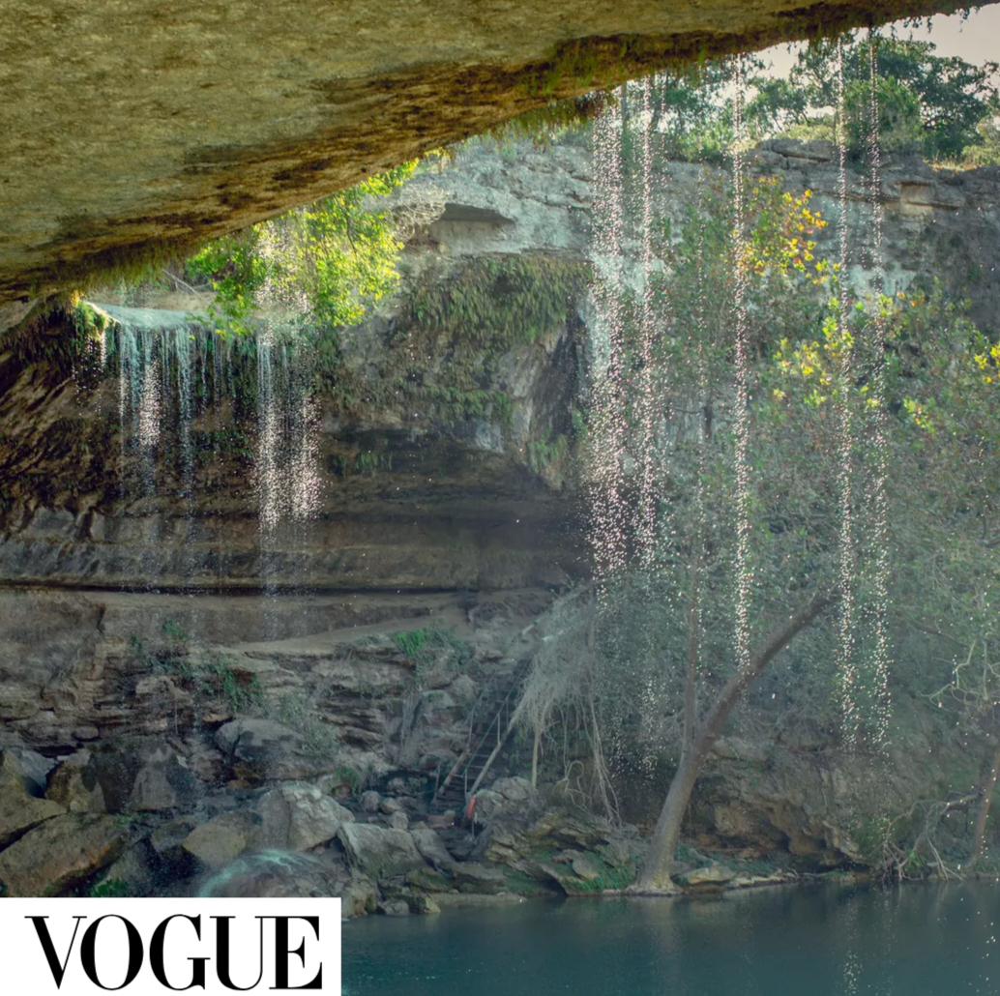
Vogue · November 2023
"A Guide to Dripping Springs, the Buzziest Rural Town in America"
Vogue included Deborah Kirk Interiors' work in its guide to Dripping Springs, spotlighting the Hill Country town's design scene alongside its restaurants and shops.
Feature Read the article ↗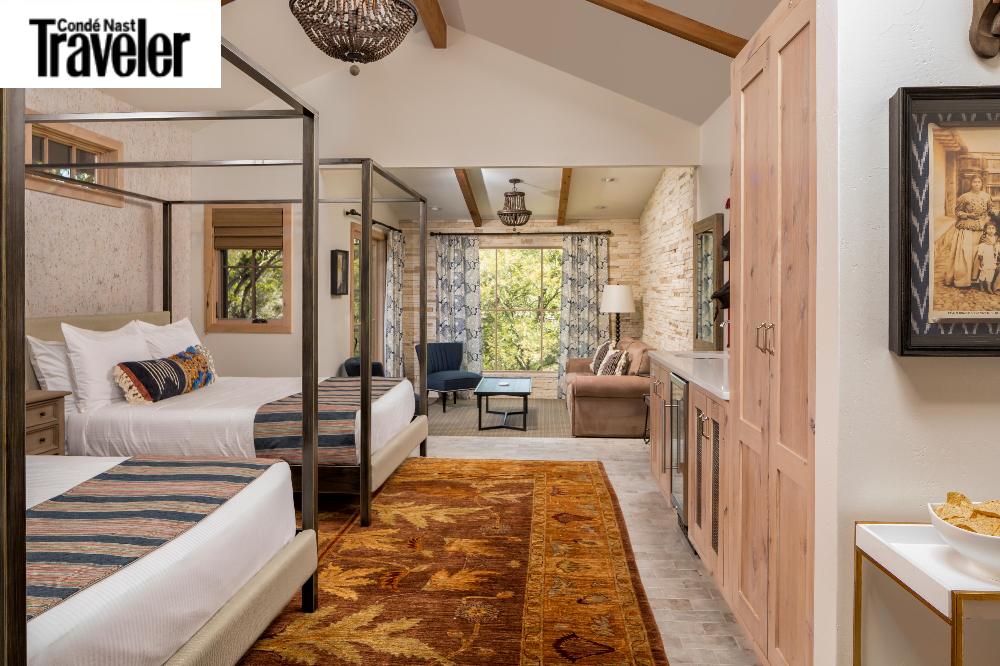
Condé Nast Traveler
Camp Lucy, Dripping Springs
Condé Nast Traveler features Camp Lucy in Dripping Springs in its hotel guide, showcasing Deborah Kirk Interiors' work on the resort's guest rooms and common spaces.
Feature Read the article ↗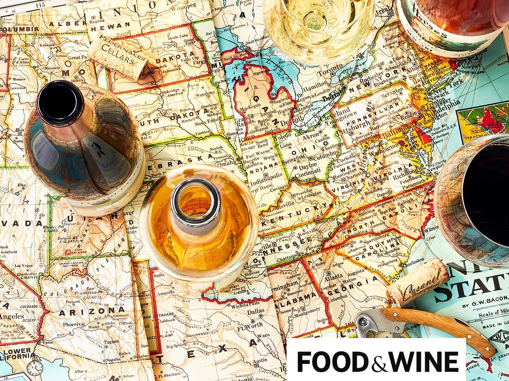
Food & Wine · May 2021
"The Five Best Wine Road Trips in the US"
Food & Wine featured Camp Lucy and Tillie's as a stop along one of the best wine road trips in the Texas Hill Country.
Feature Read the article ↗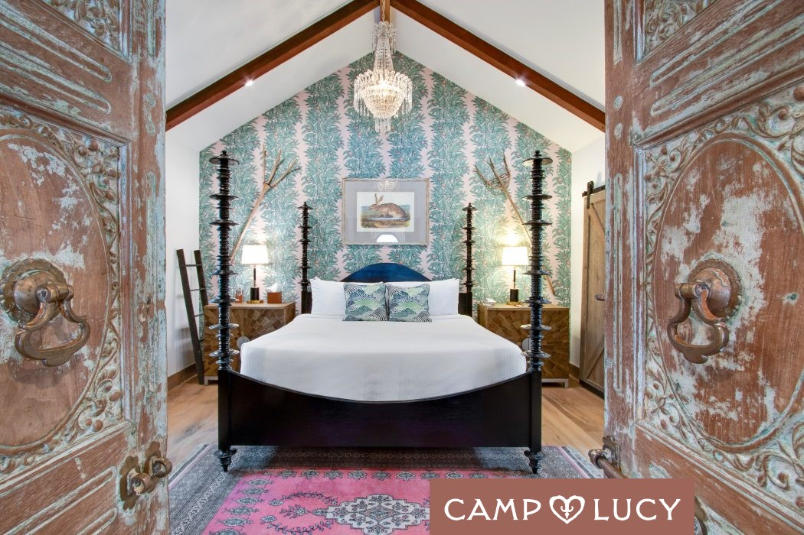
Camp Lucy Blog · April 2021
"Behind the Design at Camp Lucy"
Camp Lucy's own blog goes behind the scenes of the resort's interiors, featuring Deborah Kirk Interiors' design work across the property.
Feature Read the article ↗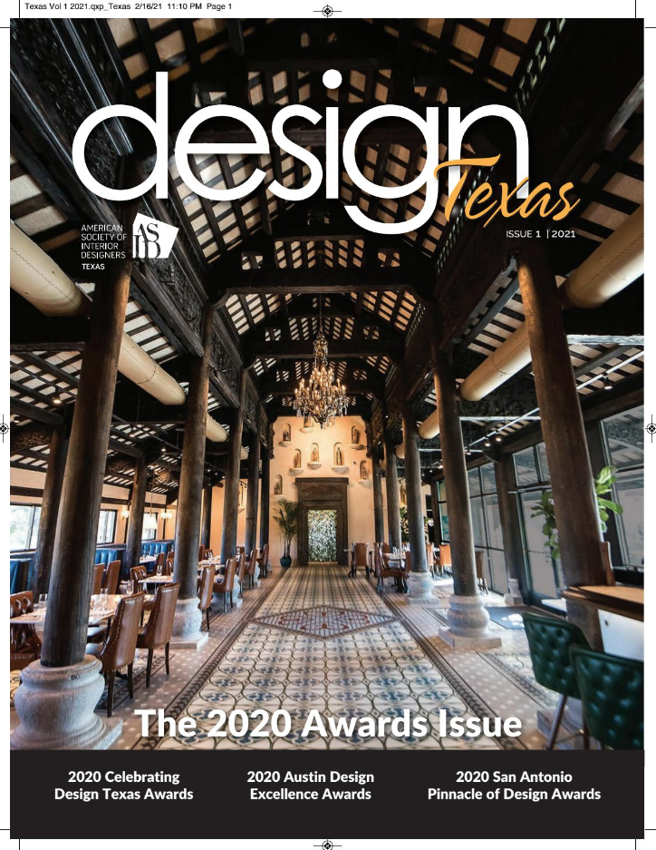
ASID Design Texas Magazine · March 2021
Design Texas — Winter 2021 Cover Feature
Deborah Kirk Interiors' award-winning project was featured on the cover of Design Texas, in an issue celebrating the 2020 Award Winners for Design Excellence.
Cover Feature Read the article ↗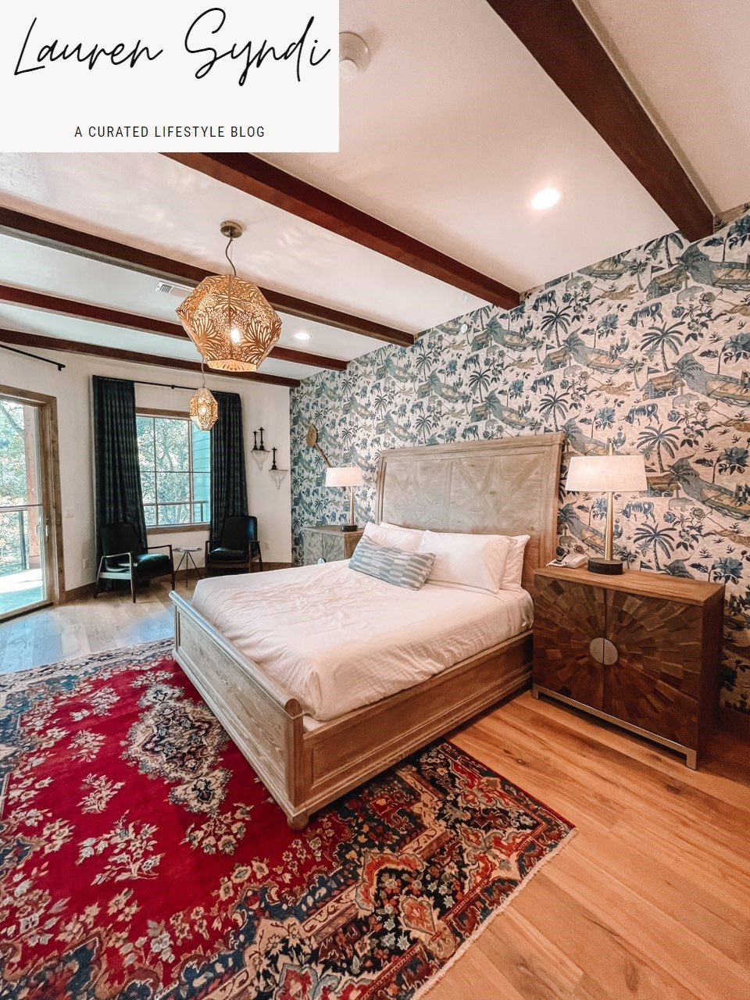
Lauren Syndi · November 2020
"Camp Lucy Staycation: All You Need to Know!"
Lifestyle blogger Lauren Syndi highlighted Camp Lucy's newest lodging accommodations, featuring the interiors designed by Deborah Kirk Interiors.
Feature Read the article ↗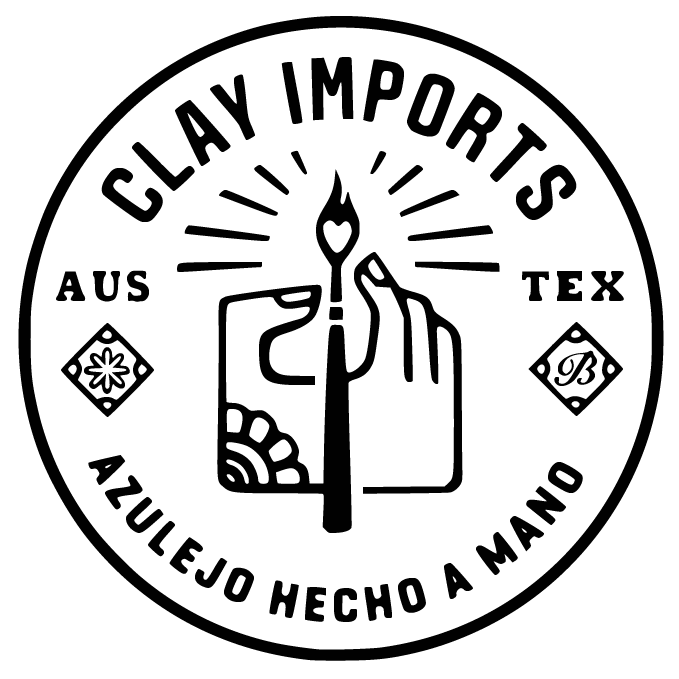
Clay Imports · October 2020
October Trade Spotlight
Clay Imports featured Deborah Kirk Interiors in its October trade spotlight, highlighting the firm's work at Tillie's, Camp Lucy.
Feature Read the article ↗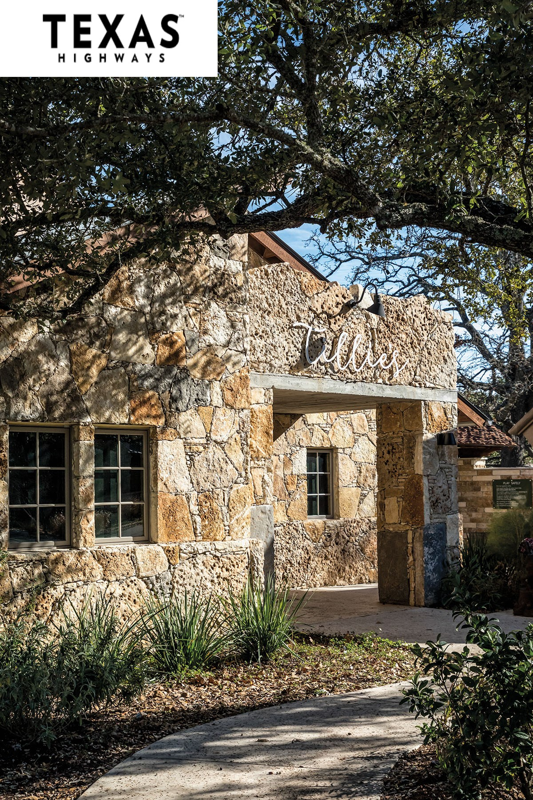
Texas Highways Magazine · February 2020
"Tillie's Is a Dining and Architectural Gem in the Hill Country"
Texas Highways features Tillie's restaurant, highlighting how Deborah Kirk Interiors' design drew inspiration from the architecture of a historic Vietnamese building, blending it seamlessly with the dining experience.
Feature Read the article ↗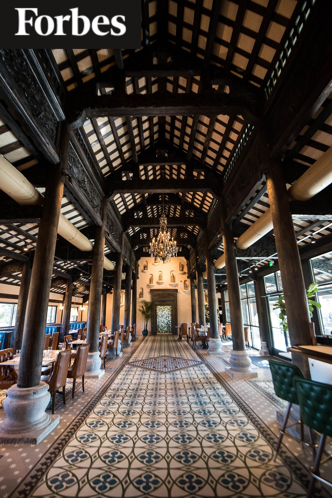
Forbes · November 2019
"The Hand Sell: Top Wine Selections from Sommelier Clint Carter in the Texas Hill Country"
Forbes highlights one of Deborah Kirk Interiors' designs alongside sommelier Clint Carter's wine selections in the Texas Hill Country.
Feature Read the article ↗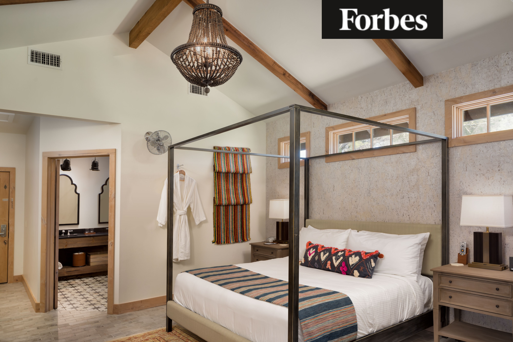
Forbes · November 2019
"Spirited Holidays in the Texas Hill Country"
Forbes featured Deborah Kirk Interiors' work on the Camp Lucy cottages as part of its coverage of festive holiday destinations in the Texas Hill Country.
Feature Read the article ↗
Tillie's Dripping Springs · October 2018
Interior Designer for Tillie's Restaurant
For Tillie's grand opening, Deborah Kirk brought a sophisticated eye rich with historical context to the restaurant's design — connecting with owner Whit Hanks through Austin's antiquing community to repurpose vintage and antique pieces into a distinctive, organic space.
Feature Read the article ↗